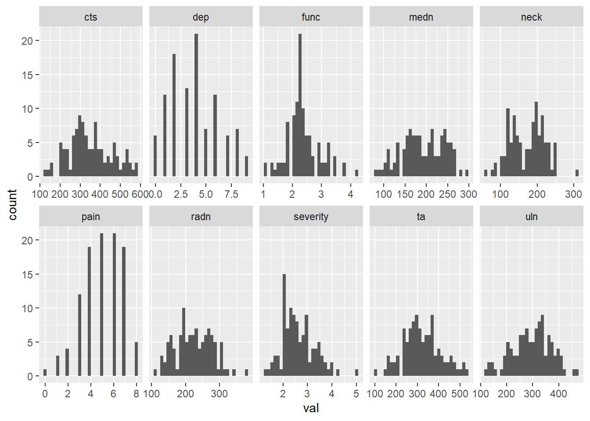

3-network
bernard-liew
2020-09-24
Last updated: 2020-11-23
Checks: 7 0
Knit directory: 2020_cts_bn/
This reproducible R Markdown analysis was created with workflowr (version 1.6.2). The Checks tab describes the reproducibility checks that were applied when the results were created. The Past versions tab lists the development history.
Great! Since the R Markdown file has been committed to the Git repository, you know the exact version of the code that produced these results.
Great job! The global environment was empty. Objects defined in the global environment can affect the analysis in your R Markdown file in unknown ways. For reproduciblity it’s best to always run the code in an empty environment.
The command set.seed(20200907) was run prior to running the code in the R Markdown file. Setting a seed ensures that any results that rely on randomness, e.g. subsampling or permutations, are reproducible.
Great job! Recording the operating system, R version, and package versions is critical for reproducibility.
Nice! There were no cached chunks for this analysis, so you can be confident that you successfully produced the results during this run.
Great job! Using relative paths to the files within your workflowr project makes it easier to run your code on other machines.
Great! You are using Git for version control. Tracking code development and connecting the code version to the results is critical for reproducibility.
The results in this page were generated with repository version 2266d36. See the Past versions tab to see a history of the changes made to the R Markdown and HTML files.
Note that you need to be careful to ensure that all relevant files for the analysis have been committed to Git prior to generating the results (you can use wflow_publish or wflow_git_commit). workflowr only checks the R Markdown file, but you know if there are other scripts or data files that it depends on. Below is the status of the Git repository when the results were generated:
Ignored files:
Ignored: .Rhistory
Ignored: .Rproj.user/
Untracked files:
Untracked: output/bn_data.RData
Note that any generated files, e.g. HTML, png, CSS, etc., are not included in this status report because it is ok for generated content to have uncommitted changes.
These are the previous versions of the repository in which changes were made to the R Markdown (analysis/3-network.Rmd) and HTML (docs/3-network.html) files. If you’ve configured a remote Git repository (see ?wflow_git_remote), click on the hyperlinks in the table below to view the files as they were in that past version.
| File | Version | Author | Date | Message |
|---|---|---|---|---|
| Rmd | 2266d36 | bernard-liew | 2020-11-23 | added explanation to graphs |
| html | a6948ce | bernard-liew | 2020-10-26 | initial analysis |
| Rmd | 89af6df | bernard-liew | 2020-10-26 | initial commit |
| Rmd | fe17d91 | bernard-liew | 2020-10-26 | initial analysis |
Load package
if (!require("pacman")) install.packages("pacman")Loading required package: pacmanWarning: package 'pacman' was built under R version 3.6.1pacman::p_load(tidyverse,
qgraph,
stats,
bootnet,
igraph,
mgm,
NetworkComparisonTest,
rio,
furrr,
cowplot,
huge,
EGAnet)Clean data
Import data
dat <- readRDS ("output/dat.RDS")Collapse variables
dat <- dat %>%
mutate (ppt_medn_base = (ppt_medn_aff_base + ppt_medn_naff_base)/2,
ppt_uln_base = (ppt_uln_aff_base + ppt_uln_naff_base)/2,
ppt_radn_base = (ppt_radn_aff_base + ppt_radn_naff_base)/2,
ppt_neck_base = (ppt_neck_aff_base + ppt_neck_naff_base)/2,
ppt_cts_base = (ppt_cts_aff_base + ppt_cts_naff_base)/2,
ppt_ta_base = (ppt_ta_aff_base + ppt_ta_naff_base)/2) %>%
select (-c(ppt_medn_aff_base:ppt_ta_naff_base))Get baseline variables
dat_base <- dat[, grepl ("base", names (dat))] %>%
select (-worst_pain_base) %>%
rename (func = cts_func_base,
severity = cts_severe_base)
names (dat_base) <- str_remove_all (names(dat_base), "_base|ppt_|mean_")
dat_base pain func severity dep medn uln radn neck cts ta
1 5 2.50 2.90 5 89.0 289.0 158.0 113.5 359.0 256.5
2 8 2.10 1.90 4 156.0 217.5 263.0 182.0 459.0 338.5
3 4 2.30 2.72 9 184.5 343.5 262.5 200.0 360.0 313.5
4 4 2.25 2.72 4 80.5 160.5 152.5 103.5 262.0 110.5
5 5 2.50 2.00 4 109.5 186.5 131.5 88.0 220.0 193.5
6 7 2.37 2.80 6 277.0 376.5 284.5 247.5 547.0 404.0
7 7 2.37 2.18 8 136.0 309.5 153.0 123.5 359.5 254.0
8 4 2.12 2.45 2 153.0 263.0 160.0 118.5 247.0 230.0
9 5 2.00 2.36 5 118.5 211.0 171.5 111.5 344.5 280.0
10 4 2.25 3.09 3 228.5 396.0 302.5 149.5 474.0 314.0
11 4 2.37 3.00 8 122.5 246.5 150.0 181.5 238.0 255.5
12 6 2.23 2.18 3 181.0 252.5 274.5 197.5 372.0 316.5
13 7 4.25 3.63 9 112.0 139.0 114.5 57.0 130.5 171.0
14 8 3.50 3.27 5 181.0 272.5 224.5 191.5 503.0 300.0
15 5 2.87 2.18 5 258.5 336.0 227.0 148.0 468.5 392.5
16 6 2.25 2.10 8 217.0 276.5 205.0 136.0 397.5 284.0
17 5 2.12 3.36 4 243.5 399.5 301.0 138.5 281.0 343.5
18 7 2.12 2.27 3 213.0 351.0 309.5 202.0 381.5 377.5
19 5 2.37 4.00 2 251.5 273.0 234.0 193.0 473.0 287.5
20 6 2.37 2.72 2 183.0 331.0 243.0 207.0 369.5 346.5
21 5 2.25 2.90 4 123.5 270.0 185.0 134.5 282.5 234.0
22 4 2.25 2.18 3 175.0 320.5 157.5 147.0 326.0 230.0
23 3 2.00 2.36 6 131.0 133.5 125.5 116.0 283.5 165.0
24 3 2.25 2.09 7 294.5 458.5 305.0 306.0 511.0 385.0
25 4 1.87 2.63 4 179.5 393.0 231.5 117.5 330.0 207.5
26 4 2.25 1.50 1 180.5 275.5 194.0 214.0 306.0 323.5
27 6 2.62 4.25 1 186.0 276.5 201.5 150.5 374.0 409.5
28 4 2.12 2.09 3 245.0 367.0 272.5 191.5 585.0 357.0
29 4 2.25 2.63 2 157.0 192.0 148.0 186.0 339.5 210.0
30 7 2.62 2.72 6 167.5 254.0 187.0 158.0 326.0 356.0
31 5 2.75 2.45 4 96.0 249.5 143.0 100.5 198.5 169.5
32 5 1.75 2.27 1 217.5 292.0 258.5 192.0 421.0 463.0
33 3 2.62 2.18 2 157.0 205.5 198.5 124.5 259.0 298.0
34 3 1.87 2.10 0 145.0 339.5 140.0 120.5 306.0 265.0
35 5 2.12 2.10 2 172.5 282.5 268.0 159.0 304.0 287.5
36 4 3.12 2.81 3 257.5 418.0 266.0 253.0 576.0 450.0
37 5 1.87 2.63 3 235.5 332.5 267.5 136.5 370.5 461.5
38 4 2.62 1.54 2 249.5 378.5 347.0 199.0 460.5 431.0
39 7 2.00 2.09 2 242.0 295.5 277.5 167.5 371.0 366.0
40 3 2.25 2.18 3 164.5 289.5 238.5 246.0 528.5 376.5
41 4 2.37 2.45 3 159.0 265.0 197.5 138.5 371.0 474.5
42 5 3.00 2.90 4 154.0 271.5 183.5 133.0 238.0 233.0
43 6 2.12 2.27 1 110.0 323.0 150.5 121.5 222.5 176.0
44 2 2.62 5.00 4 184.0 256.5 152.0 130.5 294.0 269.5
45 3 1.87 2.00 0 264.0 407.5 319.0 210.0 543.0 420.0
46 5 1.37 2.10 0 161.5 198.5 185.0 156.0 426.0 399.0
47 4 2.00 1.81 1 180.0 394.5 164.0 146.5 432.0 358.5
48 6 1.50 2.00 4 110.0 128.0 132.5 108.0 152.5 143.0
49 5 2.12 2.46 6 170.0 238.5 210.5 131.0 260.5 356.0
50 4 2.25 2.45 2 263.5 362.5 283.5 196.5 384.5 517.5
51 3 2.00 1.81 1 136.5 115.5 168.0 90.0 225.0 208.5
52 1 1.25 1.27 4 257.5 319.0 212.5 134.5 477.0 341.5
53 6 3.50 3.72 3 248.0 305.0 258.0 201.5 303.0 303.5
54 6 3.00 2.81 8 195.0 328.5 276.5 250.0 302.5 321.0
55 6 3.25 2.72 7 200.0 234.0 166.5 207.5 306.5 284.0
56 6 1.25 3.18 6 190.5 296.0 184.0 189.5 297.0 286.5
57 5 2.50 2.63 7 203.0 309.0 221.0 198.0 308.0 320.0
58 7 1.87 2.36 3 215.5 309.5 236.5 197.0 317.0 317.0
59 7 2.87 2.45 6 239.5 272.0 278.0 200.0 302.5 308.0
60 6 3.75 3.36 4 162.5 246.0 193.0 132.5 289.5 247.0
61 6 3.25 3.45 8 170.0 196.5 190.0 143.5 240.0 257.5
62 7 2.00 3.45 2 239.5 317.5 230.0 191.5 207.0 316.0
63 7 2.60 2.45 2 214.5 324.5 230.0 217.0 273.5 300.5
64 6 3.25 3.43 8 154.0 229.5 190.0 130.5 201.0 264.0
65 7 3.50 3.54 6 163.0 220.0 207.0 136.0 207.5 232.5
66 2 2.25 1.72 4 262.0 345.5 284.5 227.0 363.5 372.5
67 7 2.50 3.60 4 239.5 381.0 296.5 222.5 403.5 369.0
68 6 2.87 2.90 7 198.5 317.5 246.5 196.5 349.5 300.0
69 5 2.00 2.36 8 210.5 295.0 240.5 153.5 295.0 354.0
70 6 2.25 3.18 2 204.0 339.5 217.5 211.0 329.0 239.0
71 5 1.87 2.36 2 241.5 332.5 273.0 219.0 404.5 298.0
72 6 3.25 3.00 6 171.0 233.5 224.0 170.0 269.5 234.0
73 6 3.25 3.00 4 232.0 331.5 228.5 172.0 320.0 277.5
74 6 2.12 2.27 3 241.0 342.0 272.0 211.5 403.0 302.0
75 7 2.37 2.81 6 255.5 338.0 283.5 210.5 377.0 323.5
76 5 2.50 2.54 6 217.0 217.0 247.0 214.5 276.5 340.0
77 7 2.75 2.81 2 202.0 372.0 268.5 230.5 297.0 373.0
78 7 2.25 3.72 4 166.0 223.0 197.0 119.5 465.0 370.5
79 6 1.75 2.54 1 190.5 381.5 246.5 239.0 434.5 414.0
80 7 2.37 2.45 4 259.0 350.5 307.0 250.5 346.0 398.0
81 6 2.12 3.45 2 249.0 373.5 281.0 230.5 397.5 320.0
82 7 2.75 2.81 5 205.5 325.5 283.0 178.5 309.0 298.5
83 3 2.25 2.90 4 223.0 296.0 273.5 215.5 444.0 383.5
84 3 1.12 2.63 1 242.5 407.5 323.0 217.0 514.0 476.5
85 2 2.25 3.10 2 245.5 302.0 223.5 233.5 488.0 485.5
86 4 1.62 2.63 4 210.0 325.5 232.5 176.0 326.0 379.0
87 4 2.87 4.00 7 132.0 207.5 161.0 117.0 216.0 300.0
88 5 2.50 2.18 1 209.0 363.0 192.0 206.0 536.0 446.0
89 2 1.12 1.63 0 172.5 357.0 255.0 216.0 234.5 345.5
90 3 2.25 2.10 6 144.0 252.0 167.5 195.0 308.5 284.0
91 7 2.00 3.90 1 161.0 301.5 219.0 197.5 290.5 263.5
92 3 2.25 2.27 5 223.0 410.5 215.0 220.0 384.0 376.0
93 1 2.12 2.45 5 224.5 392.0 215.5 235.5 528.0 516.5
94 8 3.12 3.18 6 104.0 209.5 156.0 78.5 147.0 186.0
95 0 1.50 1.45 0 103.5 203.5 223.0 141.5 284.5 273.0
96 7 2.37 2.00 4 266.0 333.0 248.5 150.5 526.0 453.0
97 6 2.25 1.72 3 176.0 316.5 189.0 180.0 326.5 317.5
98 1 1.87 1.81 2 234.5 363.5 248.5 189.5 491.0 423.0
99 5 2.37 3.00 1 147.5 270.0 211.0 140.0 282.5 273.0
100 8 3.75 3.36 7 174.0 150.5 191.5 116.5 155.5 157.5
101 3 2.12 2.10 0 134.5 271.5 191.5 105.5 260.5 359.5
102 4 2.87 2.00 1 236.0 375.0 206.5 202.5 483.0 373.0
103 8 1.87 3.45 4 147.5 253.0 202.0 148.0 207.5 267.0
104 5 1.62 2.10 2 248.0 465.5 256.5 226.0 409.0 502.0
105 4 2.25 3.36 9 232.0 363.0 383.0 231.5 557.5 540.0dat_base %>%
pivot_longer(cols = everything (),
names_to = "var",
values_to = "val") %>%
ggplot () +
geom_histogram (aes (val)) +
facet_wrap (~ var, ncol = 5, scales = "free_x")`stat_bin()` using `bins = 30`. Pick better value with `binwidth`.
Get pain, cts
dat_pain <- dat[, grepl ("func|severe|mean|grp|emg", names (dat))]
names (dat_pain) <- str_remove_all (names(dat_pain), "_base|cts_|mean_")
dat_pain$grp <- factor (dat_pain$grp)
dat_base %>%
pivot_longer(cols = everything (),
names_to = "var",
values_to = "val") %>%
ggplot () +
geom_histogram (aes (val)) +
facet_wrap (~ var, ncol = 5, scales = "free_x")`stat_bin()` using `bins = 30`. Pick better value with `binwidth`.Network analysis
On baseline data
stats_type <- c("edge", "strength", "betweenness", "expectedInfluence", "closeness")
df <- dat_base
df[, map_lgl (df, is.numeric)] <- huge.npn (df[, map_lgl (df, is.numeric)])Conducting the nonparanormal (npn) transformation via shrunkun ECDF....done.df <- map_df (df, as.numeric)
n_var <- ncol (df)
nw <- estimateNetwork(df,
default="EBICglasso",
corMethod = "cor",
tuning = 0.5,
lambda.min.ratio = 0.001,
corArgs =
list(method = "pearson",
use = "pairwise.complete.obs"))Estimating Network. Using package::function:
- qgraph::EBICglasso for EBIC model selection
- using glasso::glassoWarning in EBICglassoCore(S = S, n = n, gamma = gamma, penalize.diagonal =
penalize.diagonal, : A dense regularized network was selected (lambda < 0.1 *
lambda.max). Recent work indicates a possible drop in specificity. Interpret the
presence of the smallest edges with care. Setting threshold = TRUE will enforce
higher specificity, at the cost of sensitivity.centr <- centralityTable(nw)
#
# centr_stb <- bootnet(nw,
# default="EBICglasso",
# corMethod = "cor",
# tuning = 0.5,
# lambda.min.ratio = 0.001,
# nBoots = 1000,
# type = "case",
# statistics = stats_type,
# corArgs =
# list(method = "pearson",
# use = "pairwise.complete.obs"))
#
# cor_stb <- corStability (centr_stb)
#
# edgewts <- bootnet(nw,
# default="EBICglasso",
# corMethod = "cor",
# tuning = 0.5,
# lambda.min.ratio = 0.001,
# nBoots = 1000,
# statistics = stats_type,
# corArgs =
# list(method = "pearson",
# use = "pairwise.complete.obs"))
#
# mgm_fit <- mgm (df,
# type= rep('g', 10),
# level=rep(1,10))
#
#
# pred <- predict(mgm_fit, df)Plot network
Arcs in blue means a positive correlation between connecting variables.
Arcs in red means a netative correlation between connecting variables.
Thickness of arcs gives you a qualitative indication of correlation magnitude.
plot (nw)
Plot centrality
Degree centrality is defined as the number of connections incident to the node of interest.
Degree can be straightforwardly generalized to weighted networks by considering the sum of the weights of the connections (in absolute value), instead of their number. This generalization is called strength.
Closeness centrality is defined as the inverse of the sum of the distances of the focal node from all the other nodes in the network.
Betweenness centrality is defined as the number of the geodesics between any two nodes that pass through the focal one.
The greater the value of centrality indices to one, the more important the variable.
centralityPlot(nw, scale = "relative")Note: relative centrality indices are shown on x-axis rather than raw centrality indices.
# plot (centr_stb, statistics = c("closeness", "strength", "betweenness"))
# cor_stb
# plot (edgewts)
# cor_stbOn pain data
df <- dat_pain
df[, map_lgl (df, is.numeric)] <- huge.npn (df[, map_lgl (df, is.numeric)])Conducting the nonparanormal (npn) transformation via shrunkun ECDF....done.df <- map_df (df, as.numeric)
n_var <- ncol (df)
nw <- estimateNetwork(df,
default="EBICglasso",
corMethod = "cor",
tuning = 0.5,
lambda.min.ratio = 0.001,
corArgs =
list(method = "pearson",
use = "pairwise.complete.obs"))Estimating Network. Using package::function:
- qgraph::EBICglasso for EBIC model selection
- using glasso::glassocentr <- centralityTable(nw)
#
# centr_stb <- bootnet(nw,
# default="EBICglasso",
# corMethod = "cor",
# tuning = 0.5,
# lambda.min.ratio = 0.001,
# nBoots = 1000,
# type = "case",
# statistics = stats_type,
# corArgs =
# list(method = "pearson",
# use = "pairwise.complete.obs"))
#
# cor_stb <- corStability (centr_stb)
#
# edgewts <- bootnet(nw,
# default="EBICglasso",
# corMethod = "cor",
# tuning = 0.5,
# lambda.min.ratio = 0.001,
# nBoots = 1000,
# statistics = stats_type,
# corArgs =
# list(method = "pearson",
# use = "pairwise.complete.obs"))
#
# mgm_fit <- mgm (df,
# type= rep('g', 10),
# level=rep(1,10))
#
#
# pred <- predict(mgm_fit, df)Plot network
Arcs in blue means a positive correlation between connecting variables.
Arcs in red means a netative correlation between connecting variables.
Thickness of arcs gives you a qualitative indication of correlation magnitude.
plot (nw)
Plot centrality
Degree centrality is defined as the number of connections incident to the node of interest.
Degree can be straightforwardly generalized to weighted networks by considering the sum of the weights of the connections (in absolute value), instead of their number. This generalization is called strength.
Closeness centrality is defined as the inverse of the sum of the distances of the focal node from all the other nodes in the network.
Betweenness centrality is defined as the number of the geodesics between any two nodes that pass through the focal one.
The greater the value of centrality indices to one, the more important the variable.
centralityPlot(nw, scale = "relative")Note: relative centrality indices are shown on x-axis rather than raw centrality indices.
# plot (centr_stb, statistics = c("closeness", "strength", "betweenness"))
# cor_stb
# plot (edgewts)
# cor_stb
sessionInfo()R version 3.6.0 (2019-04-26)
Platform: x86_64-w64-mingw32/x64 (64-bit)
Running under: Windows 10 x64 (build 18363)
Matrix products: default
locale:
[1] LC_COLLATE=English_United Kingdom.1252
[2] LC_CTYPE=English_United Kingdom.1252
[3] LC_MONETARY=English_United Kingdom.1252
[4] LC_NUMERIC=C
[5] LC_TIME=English_United Kingdom.1252
attached base packages:
[1] stats graphics grDevices utils datasets methods base
other attached packages:
[1] EGAnet_0.9.6 huge_1.3.4.1
[3] cowplot_1.0.0 furrr_0.1.0
[5] future_1.12.0 rio_0.5.16
[7] NetworkComparisonTest_2.2.1 mgm_1.2-10
[9] igraph_1.2.4.2 bootnet_1.4.3
[11] qgraph_1.6.5 forcats_0.4.0
[13] stringr_1.4.0 dplyr_1.0.2
[15] purrr_0.3.3 readr_1.3.1
[17] tidyr_1.0.2 tibble_3.0.3
[19] ggplot2_3.2.1 tidyverse_1.3.0
[21] pacman_0.5.1
loaded via a namespace (and not attached):
[1] R.utils_2.8.0 tidyselect_1.1.0 lme4_1.1-21
[4] htmlwidgets_1.5.1 grid_3.6.0 munsell_0.5.0
[7] codetools_0.2-16 withr_2.1.2 colorspace_1.4-1
[10] NetworkToolbox_1.4.0 knitr_1.27 rstudioapi_0.11
[13] stats4_3.6.0 listenv_0.7.0 labeling_0.3
[16] git2r_0.27.1 mnormt_1.5-5 farver_2.0.3
[19] rprojroot_1.3-2 vctrs_0.3.4 generics_0.0.2
[22] xfun_0.7 R6_2.4.0 doParallel_1.0.15
[25] smacof_2.1-1 assertthat_0.2.1 promises_1.0.1
[28] scales_1.1.1 nnet_7.3-12 gtable_0.3.0
[31] globals_0.12.4 weights_1.0.1 workflowr_1.6.2
[34] rlang_0.4.7 splines_3.6.0 lazyeval_0.2.2
[37] acepack_1.4.1 wordcloud_2.6 broom_0.5.4
[40] checkmate_1.9.3 yaml_2.2.0 reshape2_1.4.3
[43] abind_1.4-5 modelr_0.1.5 d3Network_0.5.2.1
[46] backports_1.1.4 httpuv_1.5.2 Hmisc_4.2-0
[49] tools_3.6.0 psych_1.8.12 lavaan_0.6-5
[52] ellipsis_0.3.0 RColorBrewer_1.1-2 polynom_1.4-0
[55] Rcpp_1.0.2 plyr_1.8.4 base64enc_0.1-3
[58] rpart_4.1-15 pbapply_1.4-0 haven_2.2.0
[61] cluster_2.0.9 fs_1.3.0 survey_3.36
[64] magrittr_1.5 data.table_1.12.8 openxlsx_4.1.4
[67] reprex_0.3.0 mvtnorm_1.0-10 matrixcalc_1.0-3
[70] whisker_0.3-2 mitml_0.3-7 hms_0.5.3
[73] evaluate_0.14 jpeg_0.1-8 readxl_1.3.1
[76] gridExtra_2.3 shape_1.4.4 compiler_3.6.0
[79] ellipse_0.4.1 mice_3.7.0 crayon_1.3.4
[82] minqa_1.2.4 R.oo_1.22.0 htmltools_0.4.0
[85] corpcor_1.6.9 later_0.8.0 Formula_1.2-3
[88] lubridate_1.7.4 DBI_1.0.0 relaimpo_2.2-3
[91] dbplyr_1.4.4 MASS_7.3-51.4 boot_1.3-22
[94] IsingSampler_0.2.1 Matrix_1.2-17 IsingFit_0.3.1
[97] car_3.0-2 cli_2.0.1 heplots_1.3-5
[100] mitools_2.4 R.methodsS3_1.7.1 gdata_2.18.0
[103] parallel_3.6.0 pan_1.6 BDgraph_2.63
[106] pkgconfig_2.0.2 foreign_0.8-71 xml2_1.2.2
[109] foreach_1.4.4 pbivnorm_0.6.0 rvest_0.3.5
[112] digest_0.6.19 rmarkdown_2.3 cellranger_1.1.0
[115] htmlTable_1.13.1 curl_4.3 gtools_3.8.1
[118] jomo_2.6-7 rjson_0.2.20 nloptr_1.2.1
[121] lifecycle_0.2.0 nlme_3.1-139 glasso_1.11
[124] jsonlite_1.6 carData_3.0-2 fansi_0.4.0
[127] pillar_1.4.3 lattice_0.20-38 httr_1.4.1
[130] plotrix_3.7-5 survival_2.44-1.1 glue_1.4.2
[133] networktools_1.2.3 zip_2.0.4 fdrtool_1.2.15
[136] png_0.1-7 iterators_1.0.10 candisc_0.8-3
[139] glmnet_3.0-1 class_7.3-15 stringi_1.4.3
[142] nnls_1.4 blob_1.2.1 latticeExtra_0.6-28
[145] eigenmodel_1.11 e1071_1.7-1